Installieren der “CCC-TV”-App unabhängig vom AppStore
Diese Anleitung beschreibt wie man die CCC-TV App auf seinem Apple TV mit allen von media.ccc.de zur Verfügung gestellten Inhalten installiert. (Annmerkung: in der AppStore Version wurden 8 Videos von Apple wegen inhaltlicher Bedenken gesperrt.)
Bitte selbsttätig auf das Vorhandensein von Updates prüfen und ggf. manuell updaten.
Vorbereitungen
Benötigt wird:
- Ein Apple TV Generation 4
- Ein Mac mit aktuellem OSX (Yosemite)
- Ein USB-C Kabel
- Grundkenntnisse (copy&paste) mit der Terminal.app
- Verbindung zum Internet
Schritt 1: Installieren von Xcode
Xcode lässt sich kostenfrei aus dem Mac AppStore laden. 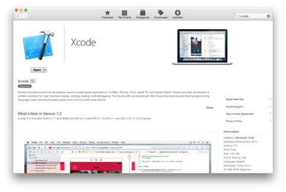
Dazu ist zunächst der Mac AppStore zu öffnen und über die Suche Xcode zu finden. Ist die (oben dargestellte Seite) offen, lasst sich die IDE über den Button “installieren” auf den eigenen Rechner installieren. Die Installation dauert einige Zeit, passiert jedoch im Hintergrund.
Der AppStore kann derzeit in den Hintergrund gelegt werden (rote Schaltfläche oben links). Die Schritte 2-4 können bereits ausgeführt werden.
Schritt 2: Download der Quelldateien
Die aktuellen Quelldateien befinden sich auf GitHub. Ein Zip-Archive ist unter
https://github.com/ccc-ffm/CCC-TV/archive/libre.zip
abrufbar.
Nach dem Download sollte sich das Archiv automatisch entpacken
(wenn diese Einstellung bei Dir geändert ist, bitte per Doppelklick auspacken).
Schritt 3: Installieren von Cocoapods
CocoaPods ist ein Installationstool von Paketen für Swift und Objective-C. Auf
der Seite von CocoaPods.org befindet sich ein Tool das zunächst installiert werden
muss.
Die Anwendung ist von
https://github.com/CocoaPods/CocoaPods-app/releases/download/1.0.0.beta.2/CocoaPods.app-1.0.0.beta.2.tar.bz2
(oder aktuellste Version) herunterzuladen.
Mit einem Doppelklick entpackt sich das Archiv. Die Applikation muss zunächst in
den “Anwendungen”, bzw “Applications” Ordner des Systems verschoben werden.
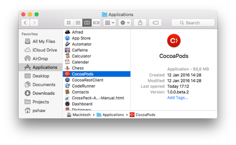
Nun kann die CocoaPods App geöffnet werden: 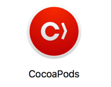
Nach dem Öffnen erscheint das Hauptfenster:
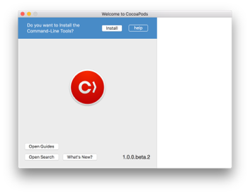
Nun müssen die Command-Line Tools von CocoaPods installiert werden. Dazu im oberen blauen Kasten auf Install klicken.
CocoaPods kann nun geschlossen werden.
Schritt 4: Projektabhängigkeiten installieren
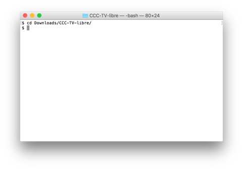
Nun ist die Terminal.app zu öffnen und in das aus Schritt 2 heruntergeladene
Verzeichnis zu wechseln.
Dazu folgenden Befehl einfügen und mit der Enter-Taste bestätigen.
cd Downloads/CCC-TV-libre/tvOS-App/Dann die Paketabhängigkeiten dem vom cocoapods mitgelieferten Tool “pod” installieren:
pod installEs sollte folgende Ausgabe auf dem Terminal erscheinen: 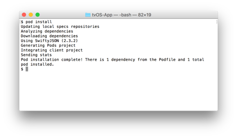
Die Arbeiten im Terminal sind nun beendet.
Schritt 5: Compilieren der Applikation
Nun muss Xcode (soweit fertig heruntergeladen) mittels Doppelklick auf den Workspace des Projektes geöffnet werden. 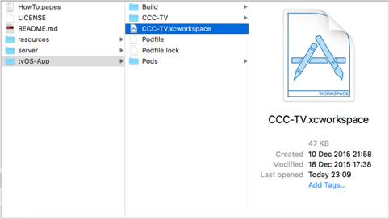 Xcode startet und das Projekt wird geöffnet.
Xcode erkennt das angeschlossene Gerät, es muss nun jedoch noch das richtige
Scheme und Device ausgewählt werden.
Bitte warten bis in der Statusleiste (oben Mitte) “Processing Symbole files”
abgeschlossen wurde:
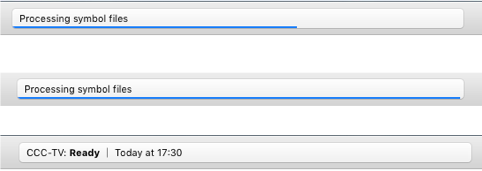
In der oberen Leiste ist nun CCCtv (Production) zu wählen mit dem
eben angeschlossenen und erkannten Device:
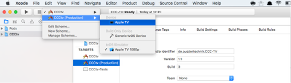
Mit der “Run”-Schaltfläche wird die App gebaut und auf das Apple TV übertragen.
Auf dem Apple TV Springboard erscheint nun die CCC-TV App.
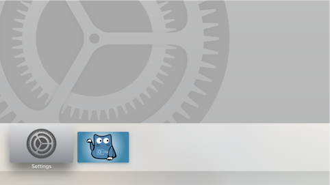
Fehlerbehebung: (Nur in seltenen Fällen nötig - warum wissen wir noch nicht!)
Erscheint oben in der Taskleiste ein rotes Ausrufungszeichen, so müssen zunächst
die Pakete gebaut werden. Dazu ist in das Scheme “Pods-CCCtv” einzubinden.
Im Menu dazu auf “managed schemes” gehen und Pods-CCCtv aktivieren.
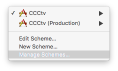
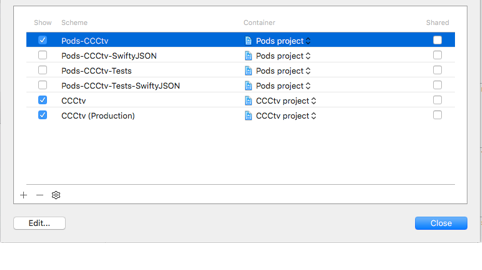
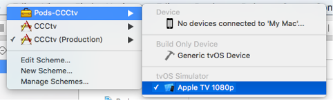
Danach muss in das Schema gewechselt werden und das Projekt einmal über die
Run-Schaltfläche gebaut werden.
Die Taskleiste bestätigt dies mit einem Erfolg:
Danach wieder in das Schema CCCtv (Production) zurück wechseln und die Übertragung wie beschreiben noch einmal anstoßen.
Auf dem Apple TV Springboard erscheint nun die CCC-TV App.